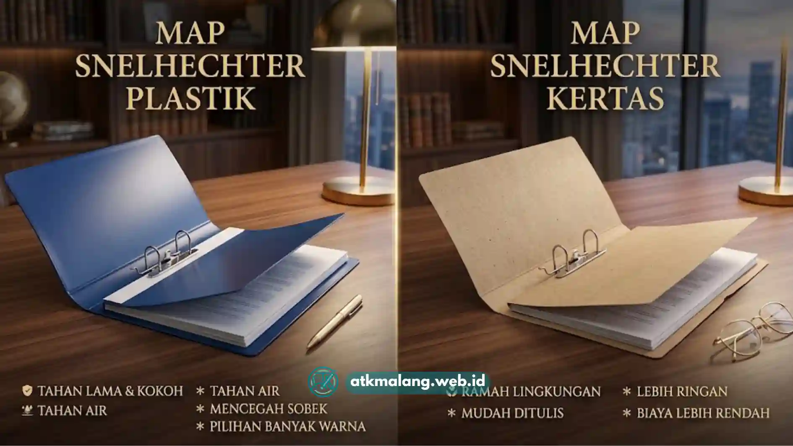

Map snelhechter adalah map dengan penjepit logam atau plastik di bagian tengah yang berfungsi menyatukan kumpulan kertas.
Alat ini mencegah dokumen agar tidak lepas, tercecer, atau tertukar urutannya saat dipindahkan.
Alat ini banyak dipakai untuk menyusun dokumen proposal, laporan, dan arsip administrasi di lingkungan kantor maupun pendidikan.
Daftar Isi
- Apa Itu Map Snelhechter?
- Untuk Siapa Map Snelhechter Digunakan?
- Kapan Map Snelhechter Sebaiknya Digunakan?
- Mengapa Fungsi Map Snelhechter Penting bagi Kerapian Dokumen?
- Jenis Bahan Map Snelhechter yang Umum Tersedia
- Ukuran Map Snelhechter yang Perlu Diketahui
- Bagaimana Cara Memilih Map Snelhechter yang Tepat?
- Kesalahan Umum dalam Penggunaan Map Snelhechter
- Tips Merawat Map Snelhechter agar Lebih Awet
Apa Itu Map Snelhechter?
Secara sederhana, snelhechter berasal dari bahasa Belanda yang berarti "penjepit cepat".
Map ini terdiri dari dua bagian utama: badan map yang menyerupai folder, dan mekanisme penjepit di tengah yang menembus lubang kertas berpelubang standar.
Dengan mekanisme ini, dokumen tetap menyatu meskipun dibolak-balik, berbeda dengan map biasa yang hanya berfungsi sebagai wadah tanpa menahan posisi kertas.
Ini membuat urutan halaman tidak mudah berubah, terutama saat dokumen dipindah atau dibawa bepergian.
Map ini juga sangat berguna ketika dokumen diperiksa oleh banyak orang secara bergantian.
Untuk Siapa Map Snelhechter Digunakan?
Map jenis ini umum digunakan oleh berbagai kalangan, di antaranya:
- Staf administrasi yang mengelola surat masuk dan keluar secara harian.
- Mahasiswa atau pelajar yang menyusun proposal, skripsi, atau tugas kelompok.
- Bagian keuangan yang mengarsipkan bukti transaksi dan laporan bulanan.
- Pelaku usaha kecil yang menyimpan dokumen legalitas dan kontrak penting.
- Instansi pemerintah yang memiliki alur pengarsipan berjenjang.
Kebutuhan tiap kelompok pengguna sedikit berbeda tergantung tujuannya.
Mahasiswa umumnya lebih mementingkan harga terjangkau untuk penggunaan sekali atau beberapa kali pakai.
Sementara itu, lingkungan kantor cenderung memprioritaskan daya tahan karena map akan dipakai berulang dalam jangka panjang.
Kapan Map Snelhechter Sebaiknya Digunakan?
Map snelhechter paling cocok digunakan ketika Anda mengelola dokumen khusus.
Gunakan map ini jika dokumen terdiri dari banyak halaman yang harus tetap berurutan dan terstruktur.
Map ini juga ideal untuk dokumen yang akan sering dibuka-tutup atau dipindahtangankan.
Selain itu, gunakan map ini jika dokumen perlu disimpan dalam jangka waktu menengah hingga panjang.
Map ini memastikan dokumen harus terlihat rapi saat diserahkan, misalnya untuk keperluan presentasi atau pengajuan proposal.
Untuk dokumen tunggal seperti satu lembar surat atau sertifikat, penggunaan map snelhechter biasanya kurang efisien dibanding map plastik biasa.
Mengapa Fungsi Map Snelhechter Penting bagi Kerapian Dokumen?
Kerapian dokumen bukan sekadar soal estetika, melainkan juga profesionalisme.
Dokumen yang tersusun rapi lebih mudah ditelusuri saat dibutuhkan, mengurangi risiko halaman hilang.
Selain itu, dokumen rapi memberi kesan profesional saat diserahkan, misalnya dalam pengajuan proposal kerja sama.
Fungsi utama map snelhechter dalam konteks ini meliputi:
- Menjaga urutan halaman. Penjepit tengah mencegah kertas tertukar posisinya.
- Melindungi dari kerusakan ringan. Badan map menahan lipatan, sobekan tepi, dan debu.
- Memudahkan identifikasi. Sampul map dapat diberi label atau warna berbeda.
- Mendukung sistem arsip. Map dapat disusun berjajar di rak atau lemari arsip secara vertikal.
- Efisiensi saat presentasi. Memudahkan pembaca mengikuti alur isi tanpa bolak-balik mencari halaman.

Terdapat varian bahan plastik dan kertas yang dapat disesuaikan dengan kebutuhan pengarsipan Anda.Jenis Bahan Map Snelhechter yang Umum Tersedia
Di pasaran Alat Tulis Kantor, map snelhechter umumnya tersedia dalam dua jenis bahan utama.
Bahan tersebut adalah plastik dan kertas atau karton, masing-masing memiliki karakteristik berbeda.
Perbedaan ini terlihat jelas dari sisi ketahanan, tampilan, dan harga.
Map berbahan plastik cenderung lebih tahan terhadap air dan kelembapan ruangan.
Sementara map berbahan kertas atau karton biasanya lebih ringan dan tersedia dalam variasi ketebalan.
Pemilihan bahan sebaiknya disesuaikan dengan kondisi penyimpanan dan frekuensi penggunaan.
Ukuran Map Snelhechter yang Perlu Diketahui
Ukuran map snelhechter yang beredar di pasaran umumnya mengikuti standar ukuran kertas.
Standar tersebut berlaku di suatu wilayah, seperti ukuran F4 (folio) dan ukuran A4.
Penting untuk menyesuaikan ukuran map dengan ukuran kertas dokumen yang akan diarsipkan.
Penyesuaian ukuran ini penting agar kertas tidak terlipat di dalam map.
Sebaliknya, jika terlalu longgar di dalam map, hal itu dapat membuat lubang kertas cepat sobek.
Bagaimana Cara Memilih Map Snelhechter yang Tepat?
Beberapa faktor yang sebaiknya dipertimbangkan sebelum membeli map snelhechter antara lain:
- Volume dokumen. Semakin tebal kumpulan kertas, semakin penting memilih map dengan penjepit yang kokoh.
- Frekuensi pemakaian. Map yang akan sering dibuka-tutup sebaiknya menggunakan bahan yang lebih tahan lama.
- Kondisi penyimpanan. Ruangan lembap lebih cocok menggunakan map berbahan plastik.
- Kebutuhan tampilan. Untuk keperluan presentasi formal, warna sampul memengaruhi kesan pertama.
- Anggaran. Pembelian dalam jumlah besar grosir biasanya lebih ekonomis dibanding satuan.
Kesalahan Umum dalam Penggunaan Map Snelhechter
Beberapa kesalahan yang sering terjadi di lapangan saat menggunakan map ini meliputi:
- Memasukkan kertas tanpa melubangi terlebih dahulu sehingga penjepit tidak berfungsi.
- Memaksakan jumlah kertas melebihi kapasitas map sehingga penjepit menjadi longgar.
- Tidak memberi label pada sampul map sehingga sulit dibedakan saat disimpan bersama.
- Menyimpan map di tempat lembap tanpa mempertimbangkan jenis bahan yang sesuai.
- Menggunakan map kertas untuk dokumen yang berisiko terkena air atau sering dibawa keluar ruangan.
Tips Merawat Map Snelhechter agar Lebih Awet
Agar map snelhechter tetap awet dan dokumen di dalamnya terjaga, terapkan beberapa kebiasaan baik.
Misalnya, simpan map dalam posisi berdiri di rak untuk mengurangi tekanan pada penjepit.
Hindari menumpuk beban berat di atas map, serta bersihkan debu secara berkala terutama untuk map kertas.
Map snelhechter berperan penting dalam menjaga kerapian dan keteraturan dokumen, terutama untuk proposal dan arsip kantor.
Pemilihan bahan, ukuran, dan cara perawatan yang tepat akan menentukan umur pakai map tersebut.
Pilih produk yang tepat agar dokumen di dalamnya selalu terlindungi secara maksimal.